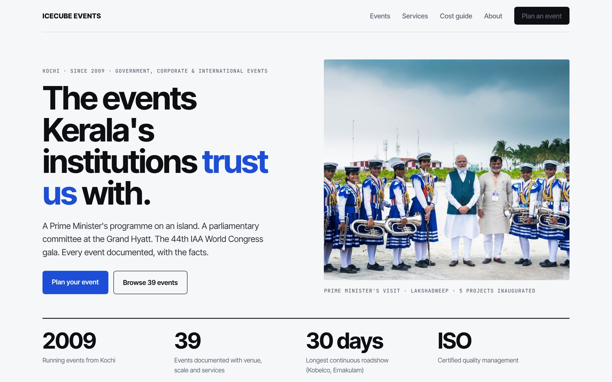
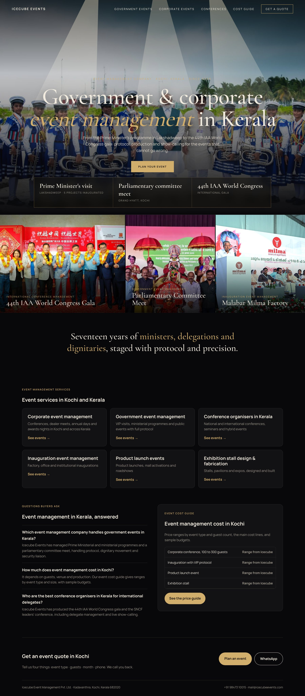
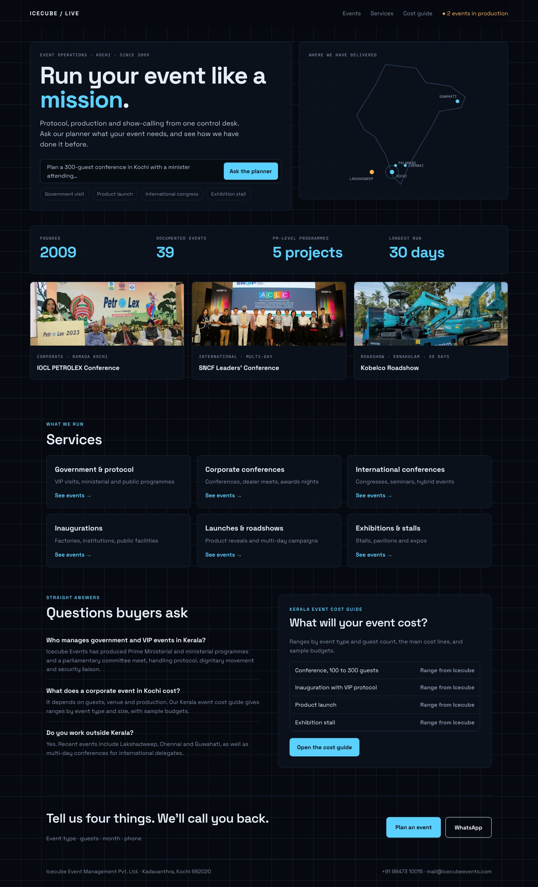
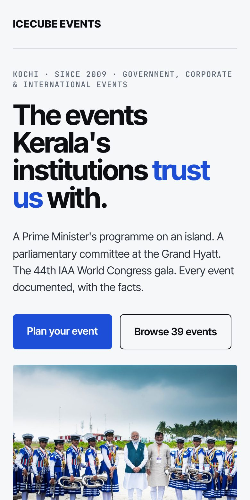
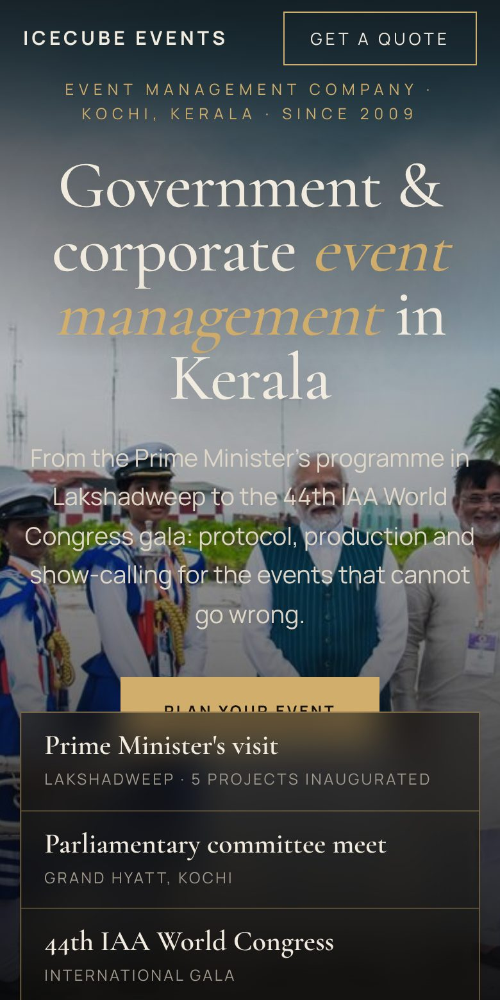
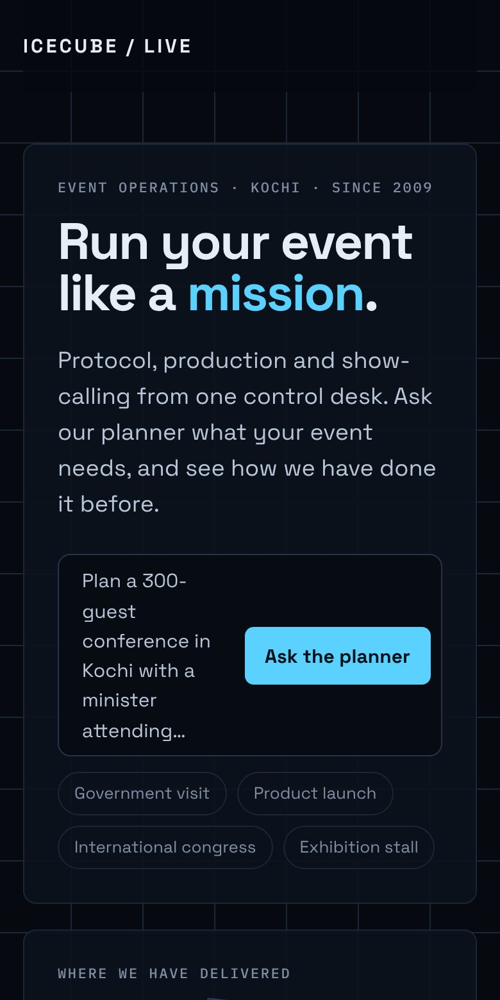

Six measured tests of icecubeevents.com, with solutions, dedicated AEO and GEO plans, the features today's buyers expect, and three homepage directions.
Icecube has one of the strongest event records in Kerala, but its website does not let Google or AI assistants see it. The priority is to make the existing work readable to search engines and AI, then give it a look that matches the work.
| Area | Measured result | Benchmark | Status |
|---|---|---|---|
| Pages working | 90 of 90 load | All pages | Pass |
| Structured data | 0 of 90 pages | 5 of 5 competitors have it | Fail |
| Content depth | Median 270 words of main content; 53 pages under 300 | Top three competitor homepages: 1,532 to 2,923 words | Fail |
| Page titles | 77 of 90 too long; 54 repeat the brand | Under 60 characters | Fail |
| Mobile speed | Main content in 3.7 to 12.9 s | Under 2.5 s (Google) | Fail |
| Share image | Broken on all 90 pages | Working image | Fail |
| Answer-ready content (AEO) | 0 pages with FAQs; 0 service pages with question headings | Watermark, Melodia, Executive Events have FAQs | Fail |
| AI answers, own knowledge (GEO) | Named in 0 of 24 | Any mention | Fail |
| ChatGPT answers, with web search | Named in 21 of 36 | Named for every service | Partial |
| Gemini answers, with web search | Named in 1 of 12 | Named for every service | Fail |
| Copilot answers, with web search | Named in 6 of 12 | Named for every service | Partial |
| AI answers citing an Icecube event | 0 of 21 | Events cited as proof | Fail |
| Google top 10 | 7 of 15 searches; best position 5 | Top 3 for core searches | Below |
| llms.txt | Present, lists all services and events | Present | Pass |
In order of dependency: each one makes the next more effective.
Structured data on every page, titles and descriptions, the www redirect, robots.txt, share images, a lighter homepage video, and unblocking OpenAI's crawler. Result: every technical check passes and the homepage shows within 2.5 seconds on mobile.
Deepen the 39 event pages with facts, rewrite each service page around one search with a direct answer and FAQs, publish the Kerala event cost guide. Result: service pages enter Google's top 10 and its answer boxes.
Strengthen the Google Business Profile, create the company's entity records, earn listings and press, and make every event citable. Result: AI assistants name Icecube for every service and cite its events.
A new look chosen from the directions in section 7, with the features buyers now expect: an AI assistant that answers from Icecube's own events, a filterable event record, and a short enquiry. Result: a site that looks like the work and converts visitors.
Rerun the AI and Google tests in this report every month and report the trend. Result: proof of progress, and early warning when something slips.
| Page type | Pages | Median words | Titles over 60 chars | Brand twice in title | 2+ H1 headings |
|---|---|---|---|---|---|
| Event pages | 39 | 211 | 33 | 30 | 0 |
| Blog posts | 34 | 536 | 31 | 15 | 34 |
| Service pages | 9 | 285 | 5 | 9 | 0 |
| Main pages | 8 | 246 | 8 | 0 | 0 |
| Whole site | 90 | 270 | 77 | 54 | 34 |
Fixes: schema markup by page type; service pages rewritten to 800 to 1,200 words and event pages to 400 to 600; one title template with the brand once; hand-written descriptions; one H1 per page; alt text on all images (90 are missing it).
| Page | Score /100 | Main content shown | Weight | Main cause |
|---|---|---|---|---|
| Homepage | 59 | 6.1 s | 35.4 MB | Two background videos (18.0 and 14.2 MB) |
| Event page (PM's visit) | 55 | 12.9 s | 2.0 MB | Full YouTube player loads first |
| Service page (government) | 62 | 6.5 s | 0.6 MB | Blocking scripts |
| Blog post | 81 | 3.7 s | 0.7 MB | Blocking scripts |
Fixes: one compressed loop under 3 MB with a still image first; tap-to-play video on event pages; load analytics after the page; cache pages at the CDN; images as WebP with set sizes.
| Check | Result | Fix |
|---|---|---|
| Share image | All 90 pages point to one image URL that returns 404 | A 1200 × 630 photo per page |
| Duplicate site | The address without www loads the full site | Permanent redirect to www |
| robots.txt | Invalid first line | Remove it; allow AI crawlers by name |
| Homepage share text | Promises wedding planning, which Icecube doesn't offer | Rewrite for every page |
| Error page | Set to be indexed | Mark noindex; add helpful links |
| Search | Icecube | Page ranking | Ranked #1 |
|---|---|---|---|
| event management company in Kochi | 5 | Homepage | Melodia (Instagram) |
| corporate event management Kochi | 6 | Homepage | Watermark, corporate page |
| government event management company Kerala | 6 | Homepage | Watermark |
| roadshow event management company Kerala | 7 | Homepage | Vibgyor |
| corporate event management company Kerala | 8 | Homepage | Watermark |
| team building organisers Kochi | 8 | Blog post (non-www address) | Korelate Learning |
| product launch event company Kochi | 10 | Homepage | Experiential Agency |
| Not in the top 10: event management company in Kerala · inauguration event management Kerala · conference organisers Kerala · international conference organisers Kerala · exhibition stall fabricators Kochi · mall activation agency Kochi · event management cost Kochi · MICE event company Kerala | |||
Fixes: one page per search, built to win it; links to service pages from the homepage and every related event; the www redirect; a cost guide page.
| Website | SEO /100 | Speed /100 | Main content | Words | Structured data | FAQs | Reviews |
|---|---|---|---|---|---|---|---|
| XES Events | 100 | 59 | 2.0 s | 1,532 | Yes | No | No |
| Watermark Event | 100 | 45 | 13.3 s | 2,385 | Yes | Yes | Yes |
| Melodia | 100 | 36 | 14.4 s | 2,923 | Yes | Yes | Yes |
| The Event People | 92 | 29 | 10.1 s | 640 | Yes | No | Yes |
| Icecube Events | 85 | 59 | 6.1 s | 399 | None | No | No |
| Executive Events | 83 | 48 | 8.8 s | 686 | Yes | Yes | Yes |
Most competitors are slower than Icecube, and none of their homepages shows a price or a planning tool. Speed and price transparency are open ground.
AEO means being the direct answer: in Google's answer boxes, "People also ask", AI Overviews and voice search. Answer engines lift short, direct answers, lists, tables and FAQs. Icecube's pages offer none of these.
| AEO signal | Service pages (9) | Event pages (39) | Blog posts (34) |
|---|---|---|---|
| Question-style headings | 0 | 0 | 34 |
| FAQ section | 0 | 0 | 0 |
| Tables | 0 | 0 | 0 |
| Lists | 0 | 0 | 5 |
| Event year stated | 0 | 15 | 34 |
| Named author | 0 | 0 | 0 |
| Buyers type | Google suggests |
|---|---|
| event management kochi… | cost · price list · budget friendly · contact number |
| how to plan a corporate event… | checklist · how to organize a corporate event · how to plan a company event |
| how much does corporate event cost… | how much does a corporate event planner cost |
| exhibition stall cost… | exhibition stall cost in India · exhibition stall charges |
| dealer meet… | invitation card · gift ideas · speech |
| government event… | government event tenders · government event management companies |
| # | Action | What it looks like | How we measure it |
|---|---|---|---|
| 1 | Answer-first opening on every service page | 40 to 60 words that answer the search directly: "Icecube Events is an inauguration event management company in Kerala, working for government bodies, PSUs and companies. Recent inaugurations include the three-day Malabar Milma factory opening and the KIED Enterprise Centre." | All 9 service pages open with a direct answer |
| 2 | FAQ set per service | 5 to 8 real buyer questions with 2 to 3 sentence answers, marked up as FAQPage. Written the way buyers search. Examples: How much does event management cost in Kochi? Which event management company handles government events in Kerala? Who are the best conference organisers in Kerala? | FAQs with valid markup on all service pages |
| 3 | Kerala event cost guide | The headline gives the range; then a table by event type and guest count, what changes the price, and sample budgets. Needs Icecube's real figures | Page in Google's top 10 for cost searches; cited by AI for the cost question |
| 4 | Checklists and how-to guides | Corporate event checklist, government protocol checklist, dealer meet planner, monsoon planning. Numbered steps, HowTo markup | Guides appearing in "People also ask" |
| 5 | Facts panel on every event page | Client, venue, city, year, guests, duration, services, in the same order on all 39 pages. Today only 15 of 39 state a year | 39 of 39 event pages with full facts |
| 6 | Named authors and dates | Each guide signed by a named Icecube expert with role, and a last-updated date | Author and date on every guide |
| 7 | Questions on the Google Business Profile | Seed the profile's Q&A with the same buyer questions and answers | Top questions answered on the profile |
GEO means being named and cited by AI assistants such as ChatGPT, Gemini and Perplexity. They draw on two things: what they learned in training, and what they find when they search the web. Icecube is absent from the first and only half-present in the second.
ChatGPT (gpt-4.1) through the OpenAI API, web search set to Kochi, 20 November 2026. Answers vary between days: on 19 November Icecube ranked first for "ministers and protocol" and was absent for inaugurations.
| Assistant | Test | Result |
|---|---|---|
| ChatGPT, own knowledge | 12 questions × 2 runs | Icecube named in 0 of 24 |
| ChatGPT, with web search | 12 questions × 3 runs | Icecube named in 21 of 36 |
| Claude, own knowledge | 12 questions × 1 run, 21 Nov 2026 | Icecube named in 0 of 12. Claude named Executive Events, Tamarind, Impresario and Intersight, and named no company at all for government, protocol, roadshow, mall activation or exhibition stalls |
| Gemini, with web search | 12 questions × 1 run in a signed-in browser, 21 Nov 2026 | Icecube named in 1 of 12: first for "best event management company in Kochi for corporate events", with icecubeevents.com as a source. Absent from the other 11 |
| Microsoft Copilot, with web search | 12 questions × 1 run in a signed-in browser, 21 Nov 2026 | Icecube named in 6 of 12, ranked first for three: corporate events in Kochi, inaugurations, and ministers and protocol |
| Buyer question | ChatGPT | Gemini | Copilot |
|---|---|---|---|
| Best company for corporate events, Kochi | #1 (3 of 3) | #1 | #1 |
| Government event or VIP visit, Kerala | #1 (3 of 3) | Not named | #4 |
| Has handled ministers and protocol | Not named | Not named | #1 |
| Inauguration company, Kerala | #4 to #5 (3 of 3) | Not named | #1 |
| Roadshow company, Kerala | #1 to #2 (3 of 3) | Not named | #2 |
| Corporate conference organisers, Kerala | Not named | Not named | #4 |
| Product launch company, Kochi | #2 to #4 (3 of 3) | Not named | Not named |
| Team building organisers, Kochi | #6 (3 of 3) | Not named | Not named |
| Mall activation agency, Kochi | #5 to #6 (3 of 3) | Not named | Not named |
| International conference, Kerala | Not named | Not named | Not named |
| Exhibition stall companies, Kochi | Not named | Not named | Not named |
| Cost of a 300-person event, Kochi | Not named | Not named | Not named |
| Questions naming Icecube | 7 of 12 | 1 of 12 | 6 of 12 |
ChatGPT: 20 Nov 2026, 3 runs per question. Gemini and Copilot: 21 Nov 2026, 1 run per question. From their own knowledge, without web search, ChatGPT and Claude named Icecube in 0 of 36 answers.
| Finding | Evidence |
|---|---|
| Copilot already reads Icecube's service pages | It cited the inauguration service page and the government event service page, plus /services and /our-works. It is the only assistant that cited a page other than the homepage |
| Where the service page was cited, Icecube ranked first | Inaugurations: #1. Ministers and protocol: #1 |
| UNSO Global leads on government questions | Named first for "government event or VIP visit", with four of its pages cited, including "government events" and "government event management protocols Kerala". Icecube was fourth |
| CEVEX appears most often after Icecube | Named in 5 of 12 answers (conferences, product launch, international conference, team building, roadshow) |
| Copilot also draws on directories | Sources included Three Best Rated, Justdial, Sulekha, IndiaMART and bdir.in |
| The cost question names no company | Copilot gave Rs 2 to 4 lakh for a basic seminar up to Rs 15 to 40 lakh for a gala, and cited venue sites |
| Finding | Evidence |
|---|---|
| Watermark is Gemini's default for government work | Named first for both "government event or VIP visit in Kerala" and "has handled ministers and protocol". Icecube was not named for either |
| Companies Gemini names most | Watermark Event Solutions 5 of 12 · Impresario 4 · The Event People 3 · Dream Maker Events 3 · Icecube 1 |
| Gemini cites company web pages, not Google Maps | Its sources for the protocol question were Watermark's site, The Event People's "governments and institutional" service page, and UNSO Global's "government events" page |
| Dedicated pages earn the citation | Product launch: Red Q's and Seraphic's product launch pages. Mall activation: Touchvane's mall activation page, cited four times |
| Icecube's only citation is its homepage | icecubeevents.com, for the general Kochi corporate question |
| The cost question names no company | Gemini gave Rs 3.95 lakh to Rs 29.97 lakh and listed venues only |
ChatGPT and Claude agree: neither knows Icecube from training, and both know Executive Events and Impresario. For government and protocol work, where Icecube's record is strongest, Claude names no company at all and Gemini names Watermark first.
| GEO signal | Result |
|---|---|
| AI crawlers reaching the site | 4 of 5 succeed; GPTBot refused |
| Content readable without JavaScript | Yes: event text is in the page source |
| Wikidata entry | None found |
| Wikipedia mentions | None found |
| Social profiles | Facebook, Instagram, LinkedIn and YouTube are linked from the site, but not declared in structured data |
| Sources ChatGPT cites | Google Maps 92%, Happiffie (a Kochi services directory) 7%, other 1%. Icecube's website: 0 |
| "Top 10 Event Management Companies in Kerala" list on Google's page one | Icecube not included |
| # | Action | What it looks like | How we measure it |
|---|---|---|---|
| 1 | Let every AI crawler in | Ask the host to stop refusing GPTBot; name GPTBot, OAI-SearchBot, ClaudeBot, PerplexityBot and Google-Extended as allowed in robots.txt | GPTBot requests succeed |
| 2 | Make the Google Business Profile the strongest in Kochi | It supplies 92% of what ChatGPT cites. Every service listed, event photos added regularly, posts, and a steady flow of client reviews that mention the event type | Review count and rating; services listed |
| 3 | Give AI facts it can quote | Each event as a page with a facts panel and Event markup; one-line facts per event in llms.txt; a "selected events" section on the homepage written as text | An Icecube event cited in the monthly test |
| 4 | Create the company's entity records | Organisation markup that names the four social profiles; a Wikidata entry; identical name, address and phone on LinkedIn, Justdial and Clutch; an EMAK member listing | Entity records live and consistent |
| 5 | Earn mentions on sites AI reads | Inclusion in the "top 10" lists that rank, a Happiffie listing, press coverage of flagship events, and client news that names Icecube | Number of third-party pages naming Icecube |
| 6 | Close the silent questions | Start with the three no assistant answers with Icecube: international conferences, exhibition stalls and cost. Then conference organising, product launches, team building and mall activation. One page each, opening with a direct answer and proof | Named for all 12 questions on every assistant |
| 7 | Track monthly, on more engines | The same 12 questions, 3 runs each, on ChatGPT, Claude, Gemini, Copilot, Perplexity and Google AI Mode | Share of answers naming Icecube, month on month |
Buyers now arrive from AI assistants and expect a website to answer them just as directly. These are our recommendations, based on the gaps the tests found and on what no competitor homepage offers. They are proposals, not measurements.
| Feature | What the visitor gets | Why it fits Icecube | Effort |
|---|---|---|---|
| AI search of Icecube's own content | A search box that answers questions in plain language, using only Icecube's events, services and guides, and shows the event pages behind each answer | 39 documented events are a ready knowledge base; buyers already ask ChatGPT these questions | Medium |
| Event planner assistant | The visitor describes an event and gets a draft plan: schedule, layout, risks and matching past events | Turns experience into a tool; every enquiry arrives with the details filled in | High |
| Instant cost estimate | A range based on event type, guests and city | Cost is the top search, and no competitor answers it | Medium |
| Explorable event record | Filter events by type, city, year, size and VIP presence; view as grid, list or map | Shows the scale of 17 years of work at a glance | Medium |
| Share-with-my-team pack | One link or PDF with the company profile, certificates and matching case studies | Events are approved by committees; government buyers need documents | Low |
| WhatsApp-first contact | Questions answered and callbacks booked on WhatsApp, with an assistant covering out-of-hours | The channel Indian buyers already use | Low to medium |
| Short event films | 60 to 90 second films per flagship event, tap to play, with a written summary | Atmosphere sells events; text keeps it readable by AI | Medium |
| Malayalam and Hindi versions | Key pages in local languages | Government and regional buyers; less competition in these languages | Medium |
| Entry by buyer type | "What are you planning?" routes: corporate, government, launch, exhibition | Each buyer sees their own proof first | Low |
Each direction was built as a complete, working homepage with Icecube's real event photography, and captured at full length on desktop and phone. Every headline, service name and question uses a phrase buyers actually search, taken from our Google tests.



| Where | Wording in the design | Search it targets (from Test 5 and Google suggestions) |
|---|---|---|
| Headline, direction 1 | Event management company in Kochi, Kerala | event management company in Kochi (Icecube ranks 5) |
| Headline, direction 2 | Government & corporate event management in Kerala | government event management company Kerala (6) · corporate event management company Kerala (8) |
| Headline, direction 3 | Corporate event management company in Kochi | corporate event management Kochi (6) |
| Service names | Conference organisers in Kerala · Inauguration event management · Product launch events · Exhibition stall design & fabrication | conference organisers Kerala · inauguration event management Kerala · product launch event company Kochi · exhibition stall fabricators Kochi (not in top 10 today) |
| Cost panel | Event management cost in Kochi · price guide | event management kochi cost · price list |
| Buttons | Get an event quote | Buyers searching with intent to hire |
A bright, confident page. The headline is the phrase buyers search, set very large; three captioned event photos overlap beside it; a dark band of oversized numbers follows, then a moving strip of client names and the event record as a table.
Event management company in Kochi, Kerala
Targets: event management company in Kochi
Inter Tight, near-black on cool white, blue to cyan accent
All buyers; the safest all-round choice
Strongest of the three. The headline, services and questions use searched phrases, and facts sit in text and tables.
Proof and keywords in the first screen; fast to load; easy to keep updated.
Relies on captions and numbers being kept accurate.

A full-screen photograph of the Prime Minister's programme under stage-light beams, with a large serif headline and a frosted glass bar naming three flagship events. Three tall event panels follow.
Government & corporate event management in Kerala
Targets: government event management company Kerala · corporate event management company Kerala
Cormorant Garamond with Manrope, ivory on black, brass accent
Government, PSU, international and premium corporate buyers
Very good. The hero carries the two highest-value searches, and each panel is labelled with its service phrase.
The strongest first impression; makes the flagship work feel as important as it is.
Depends on high-quality photography; needs the lighter video treatment from Test 2 to stay fast.

The homepage as an operations desk, lit with a cyan glow: a search-phrase headline, a planner prompt that takes a plain-language question, a map of where Icecube has delivered, glowing numbers and a feed of recent events.
Corporate event management company in Kochi
Targets: corporate event management Kochi
Space Grotesk with IBM Plex Mono, dark grid, cyan accent
Corporate and technology clients; a brand that wants to look ahead
Very good. The planner prompt is the natural home for AI search of Icecube's own content.
The most forward-looking; shows scale and reach at a glance.
Can feel cold to traditional buyers; live elements need real data to stay honest.

| Test | Tool and setup | Scope |
|---|---|---|
| Site crawl and AEO signals | Automated crawl of every page in the sitemap, 20 and 21 Nov 2026 | 90 pages |
| Speed | Google Lighthouse 12.2, mobile setting, 20 Nov 2026 | 4 Icecube pages, 5 competitor homepages |
| AI visibility | ChatGPT (gpt-4.1) through the OpenAI API, web search set to Kochi, 20 Nov 2026 | 12 questions, 60 answers |
| AI visibility, Claude | The same 12 questions answered by Claude from its own knowledge, no web search, 21 Nov 2026 | 12 answers |
| AI visibility, Gemini | The same 12 questions typed into gemini.google.com in a signed-in browser, one new chat each, 21 Nov 2026 | 12 answers, 1 run |
| AI visibility, Copilot | The same 12 questions typed into copilot.com in a signed-in browser, one new chat each, 21 Nov 2026 | 12 answers, 1 run |
| AI crawler access | Page requests identifying as each AI crawler, 21 Nov 2026 | 5 crawlers |
| Google rankings | Google top 10 results located in Kochi, 20 Nov 2026 | 15 searches |
| Buyer questions | Google autocomplete suggestions for India, 19 and 21 Nov 2026 | 20 search stems |
| Competitors | Homepage content and Lighthouse, 19 and 20 Nov 2026 | 6 homepages |
The full crawl results, Lighthouse reports and all 60 ChatGPT answers are available on request.